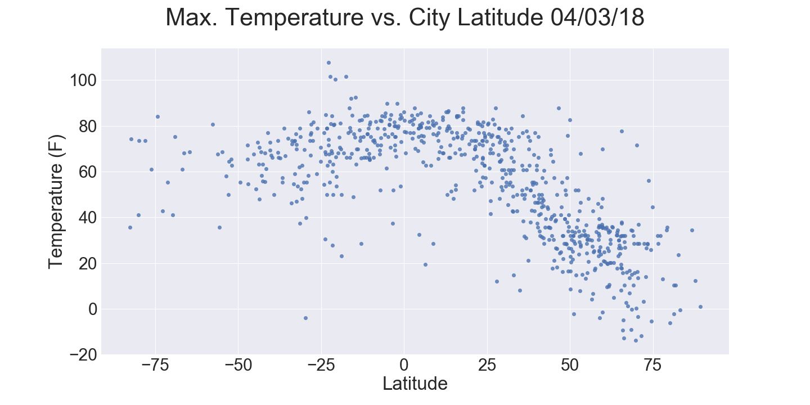

Summary: Latitude vs X
Visualizations

The purpose of this project was to analyze how the weather changes across various latitudes in addition to specific weather characteristics at the equator. To accomplish this analysis, data was downloaded from the OpenWeatherMap API and organized in a data file for over 500 cities.
After assembling the data file, and using Python and Matplotlib with the Seaborn libraries, plots were generated for various aspects of the weather vs. latitude. Factors examined included: temperature, cloudiness, wind speed, and humidity. This site provides the source data and visualizations created as part of the analysis, as well as descriptions of any observed trends.